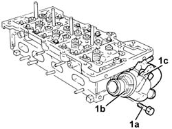
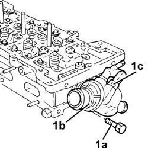

1088C32 thermostat unit - r + r with cylinder head removed
- Path
- Procedures > 10 ENGINE > 1088 ENGINE COOLING > 1088C water pump and thermostat > 1088C32 thermostat unit - r + r with cylinder head removed
- Kind
- repair procedure (removal / refitting; the operation number is the code)
- Applies to
- engines: 1.9 JTD 16v, 2.4 JTD 20v; all production periods
- Interactive page
- https://sloeber94.github.io/elrnDB-a156/en/#/3239104
Applies to: engines: 1.9 JTD 16v; all production periods
 Removing
Removing
 Refitting
Refitting1. Tighten bolts (1a) and remove the thermostat (1b), complete with engine coolant temperature sensor (1c).
Remove the gasket.

Applies to: engines: 1.9 JTD 16v; all production periods
Refitting
RemovingPlace the thermostat, complete with gasket and coolant temperature sensor, back in its housing and tighten the bolts to the recommended torque.
 | Fastening | Component | Ø | Value (daNm) |
|---|---|---|---|---|
- | - | - | - | - |
Applies to: engines: 2.4 JTD 20v; all production periods
Removing
Refitting1. Tighten bolts (1a) and remove the thermostat (1b), complete with engine coolant temperature sensor (1c).
Remove the gasket.

Applies to: engines: 2.4 JTD 20v; all production periods
Refitting
RemovingPlace the thermostat, complete with gasket and coolant temperature sensor back in its housing.
Tighten the bolts to the specified torque.
| Fastening | Component | Ø | Value (daNm) |
|---|---|---|---|---|
- | Bolt | THERMOSTAT | M8 | 2.5 |